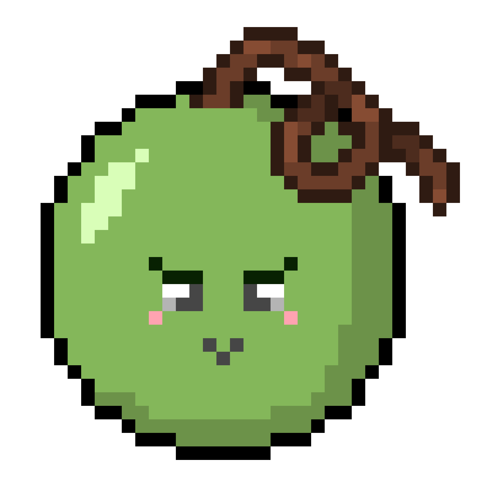
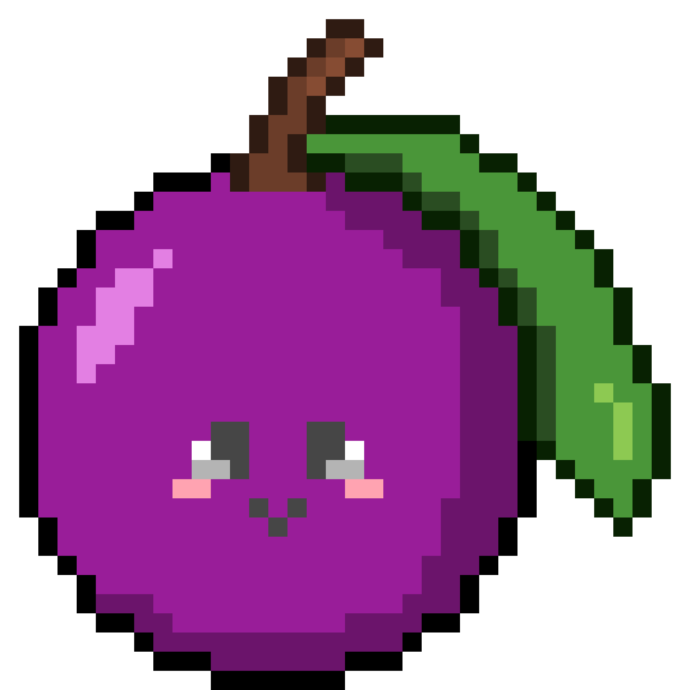

A Wines of the World Experience
Journey of a Grape
How Packaging Shapes Your Wine
Choose Your Grape
This determines your character.

Green Grape
White wine varietals
Chardonnay, Riesling, Pinot Grigio

Purple Grape
Red wine varietals
Cabernet, Merlot, Shiraz
Begin Your Journey
Arrow keys or WASD to move · Space or E to interact
Stations discovered:
0
/ 10
E
or
Space
to explore
▲
▼
◄
►
ACT
🍇
Journey Complete!
You've explored all 10 packaging methods.
✕